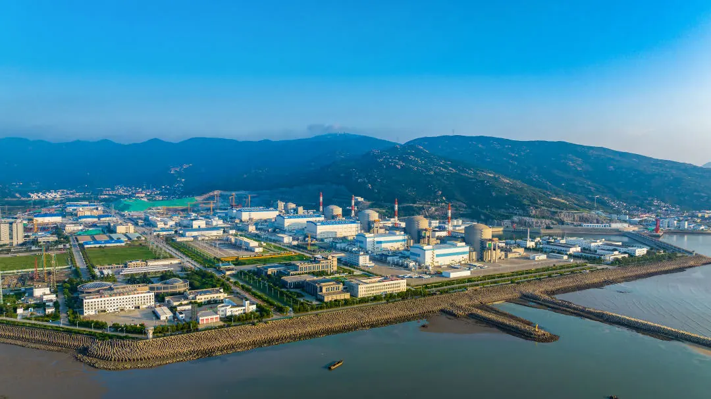

地理位置
中国江苏省连云港市连云区
核电厂历史
一期1号机组于1999年10月开工建设，于2006年 5月并网成功并在次年 5月正式商转；
一期2号机组于2000年10月开工建设，于2007年 5月并网成功并在同年 8月正式商转；
二期3号机组于2012年 9月开工建设，于2017年12月并网成功并在次年 2月正式商转；
二期4号机组于2013年 9月开工建设，于2018年 9月并网成功并在同年12月正式商转；
二期5号机组于2015年12月开工建设，于2020年 7月并网成功并在同年 9月正式商转；
二期6号机组于2016年 9月开工建设，于2021年 5月并网成功并在同年 6月正式商转。
堆型与数量
截至2024年11月，田湾核电厂共拥有4台运行中的VVER-1000型压水堆（1，2，3，4号）以及2台M310+型压水堆（5，6号），并规划引入2台新型三代核电机组。
发电基本原理
田湾核电厂采用VVER-1000压水堆，利用高压冷却水将堆芯的热量带出，通过蒸汽发生器产生高温高压蒸汽，驱动汽轮机发电。其一回路系统采用稳压器控制压力，确保核反应堆安全运行；二回路则通过蒸汽循环发电，并实现冷凝回收，确保系统高效运行。

图1：压水堆示意图
荣誉与贡献
田湾核电厂是我国最大的核电厂之一，也是最多压水堆核电机组的核电厂。除此之外，它也是中俄核能合作的典范。截至2024年5月20日，田湾核电站已累计向长三角地区输送清洁电力达4003.46亿度，等效减排二氧化碳3.2亿吨。此外，田湾核电站4号机组核岛安装工程荣获了2021—2022年度“中国安装工程优质奖（中国安装之星）”，这是我国安装行业的最高荣誉，被誉为“安装工程的鲁班奖”。
图2：田湾核电厂全景
参考文献
1. 俞冀阳.核工程基本原理.北京：清华大学出版社，2018
2. 俞冀阳.核电厂系统与运行.北京：清华大学出版社，2016
3. 2024年中国核电行业研究报告，2024
4. 中国科学院上海应用物理研究所.浅谈沸水堆与压水堆，2011
5. AP1000反应堆压力容器的制造难点与监造应对措施
6. 国家核安全局网站